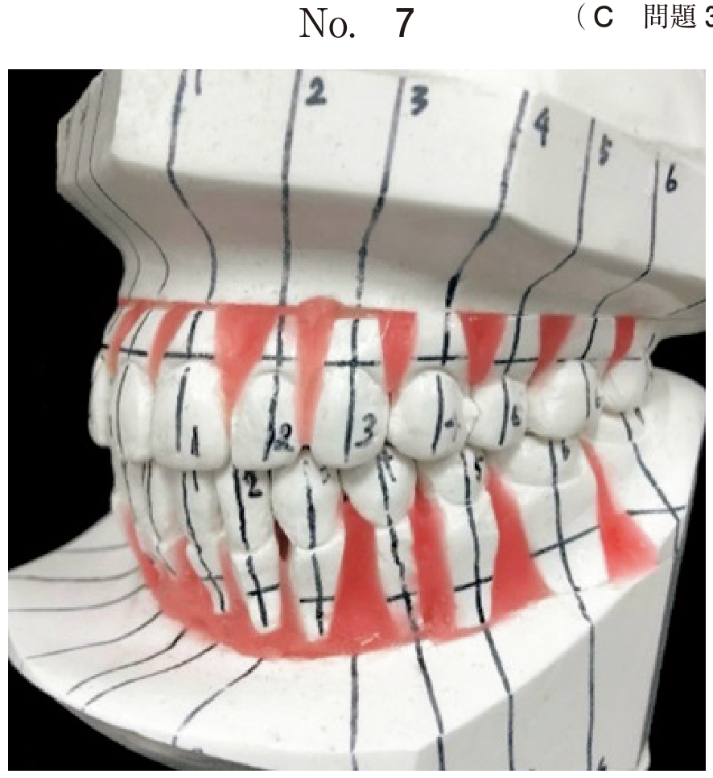
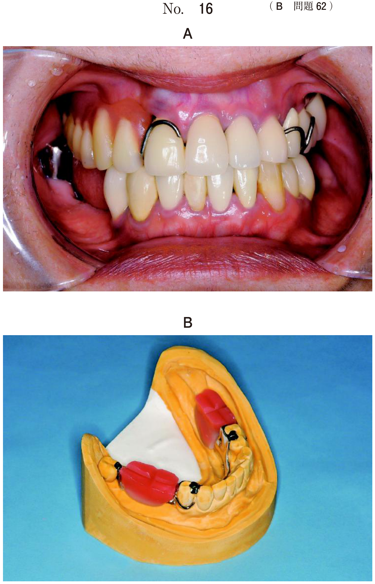
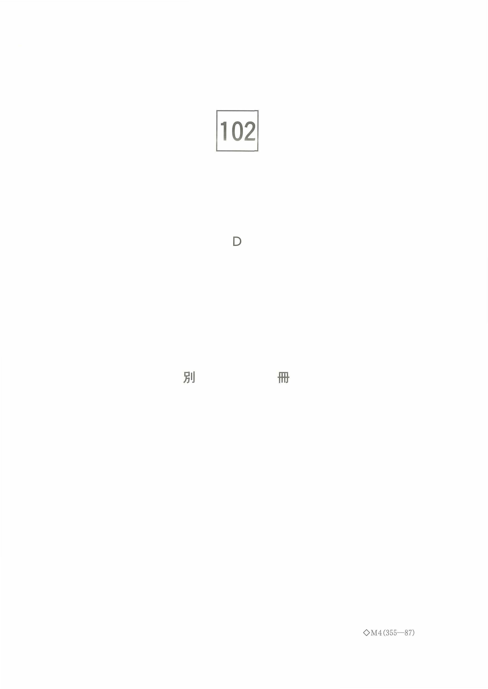
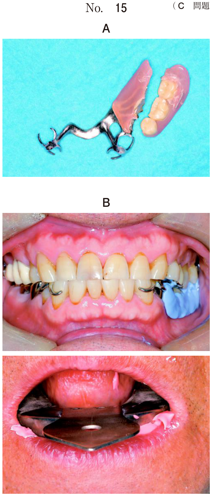
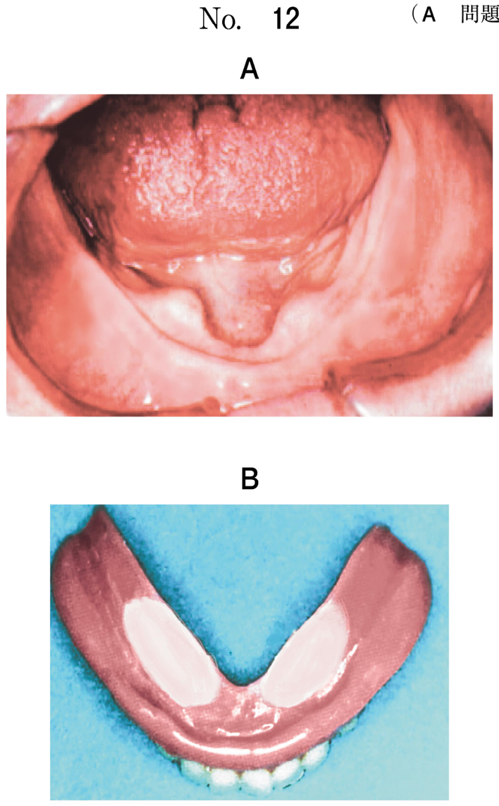
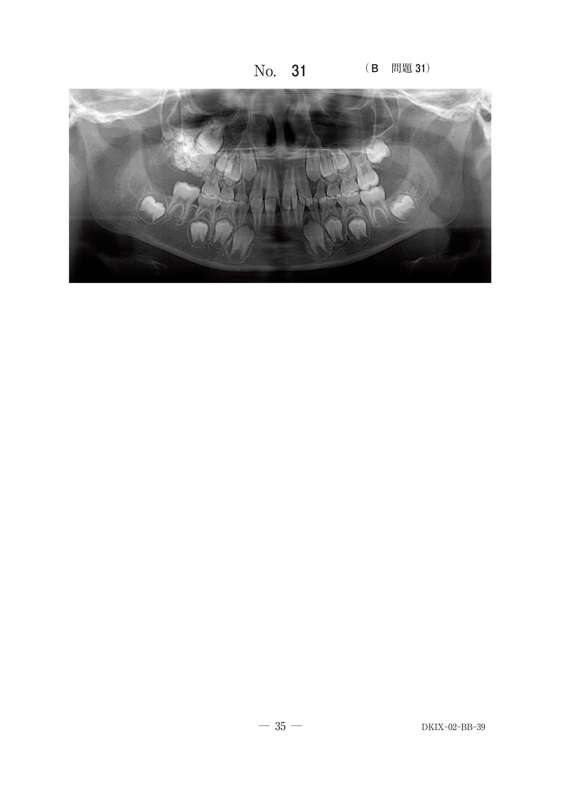
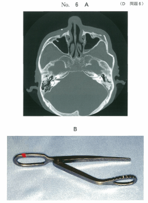
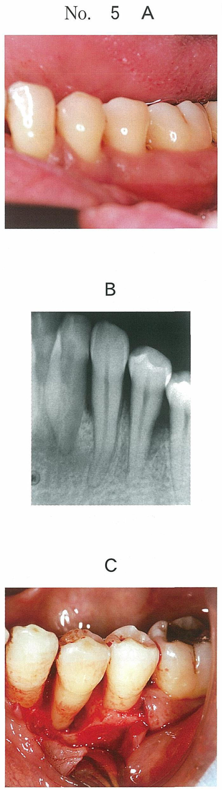

骨折の診断・治療
骨折の分類
軟組織状態による分類
| 分類 | 特徴 |
|---|---|
| 閉鎖性骨折（単純骨折） | 骨折部と皮膚や粘膜の創傷との交通がないもの |
| 開放性骨折（複雑骨折） | 骨折部と皮膚や粘膜の創傷が交通しているもの。感染を生じやすい |
注意：「複雑骨折」≠「重複骨折」。複雑骨折＝開放性骨折（創傷が外界と交通）。重複骨折＝骨折線が複数存在するもの。
外力の作用状況による分類
| 分類 | 定義 | 代表例 |
|---|---|---|
| 直達骨折 | 直接外力の作用した部位に生じた骨折 | 頬骨弓骨折など |
| 介達骨折 | 外力の作用した部位から離れた部位に生じた骨折 | 関節突起骨折（オトガイ部強打で発生） |
骨離断状態による分類
- 完全骨折：骨の連続性が断たれた状態
- 不完全骨折（若木骨折を含む）：断端間の骨の連続性が保たれている。若年者の下顎骨に多い
- 亀裂骨折：裂隙形成（ヒビ）にとどまる。骨折片は可動性であるが整復は比較的容易
受傷後の経過期間による分類
- 新鮮骨折：受傷後約2週間以内。治癒機転が始まっていない
- 陳旧骨折：受傷後約2週間以上経過。治癒機転が進行している
骨折の整復
受傷後可及的に早く行うのが原則。
| 整復法 | 方法 | 適応 |
|---|---|---|
| 非観血的整復法（保存的） | 顎間ゴムや口腔外装置による牽引整復、手指による徒手整復 | 亀裂骨折、不完全骨折、小児・高齢者 |
| 観血的整復法 | 直接骨折線を明示して整復 | 偏位のある完全骨折 |
骨折の固定法（★最頻出★）
- 有歯顎の成人 → 線副子による顎間固定 ＋ ミニプレートによる顎内固定
- 無歯顎・多数歯欠損 → 床副子（上顎：懸垂固定、下顎：囲繞結紮） ＋ 金属プレート
- 小児 → チンキャップ（顎外固定） ＋ 開口訓練（保存的治療が原則）
- 偏位なし・不正咬合なし → 顎外固定（チンキャップ、弾性包帯）のみ
顎外固定
オトガイ帽（チンキャップ）、弾性包帯など。骨折線の偏位がなく不正咬合が認められない症例や、顎間・顎内固定ができない症例に対し骨折部位の安静を保つ目的で行う。
顎間固定
上下顎の歯に結紮線や副子を装着し、整復後に中心咬合位で鋼線やゴム輪で結紮する方法。対合歯列と緊密に咬合させ、筋活動の影響を抑制し、骨折部位の安静および咬合の維持を得る。
| 方法 | 特徴・適応 |
|---|---|
| 歯牙結紮 | 0.3〜0.5mm径の鋼線で歯を結紮する |
| 線副子 | 歯列弓の唇頬側に沿って適合させた副子を鋼線や接着性レジンで歯に固定。最も一般的な顎間固定法 |
| 床副子 | 無歯顎・多数歯欠損・小児のように歯を固定源として利用しにくい症例に使用。上顎では頬骨弓や前頭骨に懸垂固定、下顎では囲繞結紮法で鋼線により下顎骨に直接固定 |
| ブラケット法 | 歯科矯正装置を利用。顎変形症手術に用いる |
| 顎間固定用骨ネジ | 歯槽骨に骨ネジを打ち込んで固定 |
| ハイブリッドMMF | アーチバーの固定性と顎間固定スクリューの効率性を有する。骨ネジより固定力が強く、線副子より簡便 |
骨内固定（顎内固定）
| 材料 | 利点 | 欠点 |
|---|---|---|
| 金属プレート（チタン） | ・力学的強度が高い ・術後の顎間固定を必要としない場合がある → 骨片の安静＋咀嚼の早期回復 |
・除去手術が必要 ・チタンアレルギーの可能性 |
| 吸収性プレート（PLLA：ポリL-乳酸） | ・除去手術が不要 | ・エックス線検査で確認できない ・強度に難点がある ・完全吸収まで長期間を要する ・術後の顎間固定が必要になる場合がある |
術後管理と合併症（★頻出★）
術後顎間固定の目的
- 咬合の緊密化：正常な咬合関係の回復
- 異常癒着の防止：不正咬合のまま癒合することを防ぐ
※感染予防や腫脹軽減は顎間固定の目的ではない。
開口訓練の必要性
関節突起骨折では、非観血的でも観血的でも顎間固定解除後に開口訓練が必要。行わないと関節周囲の線維化・骨性癒着により顎関節強直症を生じる。
両側関節突起骨折：外科療法の利点
- 顎間固定期間が短い：確実な固定により早期に顎間固定を解除できる
- 偏位骨片を整復できる：直視下で正確な整復が可能
※感染リスクは外科療法の方がむしろ高い。開口訓練は外科療法でも必要。
神経損傷
| アプローチ | 損傷リスクのある神経 | 症状 |
|---|---|---|
| 下顎骨下縁アプローチ | 顔面神経下顎縁枝 | 下唇の下制障害（口角下制筋・下唇下制筋の麻痺） |
| 下顎骨体部の骨折 | 下歯槽神経 | 下唇・オトガイ部の感覚障害（Vincent症状） |
下歯槽神経障害の検査法
- 触覚検査：軽い接触刺激に対する知覚の有無を確認
- 二点識別検査：2点間の弁別閾を測定
※味覚検査（鼓索神経）、Saxonテスト（唾液分泌量）、プリックテスト（I型アレルギー）は下歯槽神経の検査ではない。
年齢別の治療方針
小児の関節突起骨折
小児では原則として保存的治療を行う。チンキャップ（顎外固定）で骨折部の安静を保ち、開口訓練で顎関節強直症を予防。骨のリモデリング能力が高いため良好な予後が得られる。
乳幼児の下顎骨骨折
治療法選択の考慮因子：
- 骨片の偏位：偏位の程度で保存的か観血的かを判断
- 永久歯胚の位置：プレート固定時にスクリューが永久歯胚を損傷しないよう注意
無歯顎高齢者の下顎骨骨折
歯がないため線副子は使用不可。床副子を用いた囲繞結紮（義歯を鋼線で下顎骨に直接固定）に加え、金属プレートによる骨内固定を併用する。
創傷の分類
| 創の種類 | 原因・特徴 | 組織欠損 |
|---|---|---|
| 咬創 | 咀嚼時やてんかん発作で軟組織を噛んで生じた創。→難治性潰瘍 | — |
| 切創 | 鋭利な刃物やガラスで生じた創。周囲組織の損傷は少ない | なし |
| 挫傷 | 鈍器により組織が圧挫した開放性損傷。創縁不規則、周囲組織の挫滅 | あり |
| 割創 | 組織が分断された創。周囲組織の損傷あり | なし |
| 裂創 | 牽引力により組織の弾性力を超えて引き裂かれた創。創縁不規則 | — |
| 刺創 | 針などの鋭器が刺入して生じた創。創部は小さいが深い。血腫形成あり | — |
| 擦過傷 | 摩擦で生じた傷。組織液の滲出、上皮層の剥離 | あり |
※組織欠損がある場合は二次治癒をたどることが多い。
軟組織損傷の治療フロー
①止血（圧迫止血が基本）→ ②洗浄・異物除去（滅菌生理食塩液。創内は消毒液を用いない）→ ③デブリードマン（壊死組織・挫滅組織を切除して新鮮創化）→ ④創の閉鎖・縫合 → ⑤感染対策
縫縮できない大きな実質欠損 → 湿潤療法（ハイドロコロイド等のドレッシング材で被覆）→ 二次治癒を図る。
過去問
固定法・治療法の選択（6件）
30歳の男性。咬合不全を主訴として来院した。昨夜、転倒して下顎を強打したという。初診時のエックス線画像（別冊No.11A）と3D-CT（別冊No.11B）を別に示す。 適切な治療法はどれか。2つ選べ。


b 床副子を用いた顎内固定
c 線副子を用いた顎間固定
d チンキャップを用いた開口制限
e ミニプレートを用いた顎内固定
【解説】有歯顎成人の下顎骨骨折（偏位あり）。線副子による顎間固定（最も一般的な方法）で咬合を安定させ、ミニプレートによる顎内固定で骨片を確実に固定する。有歯顎のため床副子は不要。チンキャップは偏位のない場合の顎外固定であり本症例には不十分。
19歳の女性。咀嚼困難を主訴として来院した。3日前に階段から転落し、オトガイ部を強打したという。検査の結果、保存的治療を行うこととした。初診時のエックス線画像（別冊No.23A）とCT（別冊No.23B）を別に示す。 使用するのはどれか。1つ選べ。


b 線副子
c Kirschner 鋼線
d 骨接合用骨ネジ
e 骨接合用プレート
【解説】オトガイ部強打による関節突起骨折（介達骨折の代表）。「保存的治療」と明示されているため非観血的整復固定を行う。有歯顎の19歳女性であるため線副子を用いた顎間固定が適切。Kirschner鋼線・骨接合用骨ネジ・プレートはいずれも観血的治療の器材。床副子は無歯顎や小児で使用。
76歳の女性。下顎の腫脹を主訴として来院した。昨夜転倒して受傷したという。全身状態は良好である。既往歴として高血圧と糖尿病とがあり、血圧は130/87mmHg、HbA1Cは6.0%である。初診時のエックス線写真（別冊No.38）を別に示す。 適切な治療法はどれか。2つ選べ。

b 床副子を用いた囲繞結紮
c 金属プレートによる固定
d ワイヤーによる懸垂固定
e 遊離骨移植による再建固定
【解説】無歯顎高齢者の下顎骨骨折。歯がないため線副子は使用できない。下顎の無歯顎では床副子を用いた囲繞結紮（義歯を鋼線で下顎骨に直接固定）で顎間固定を行い、金属プレートで骨内固定を行う。HbA1C 6.0%で血糖コントロール良好のため手術可能。
8歳の女児。開口時の右側への偏位を主訴として来院した。階段で転倒して顎を打ってから開口時に痛みがあるという。クリック音を認めない。初診時のエックス線写真（別冊No.46）を別に示す。 適切な対応はどれか。2つ選べ。

b 下顎頭切除術
c 観血的整復固定
d 顎関節腔内洗浄
e チンキャップ装着
【解説】8歳の小児の関節突起骨折（開口時に患側への偏位）。小児では保存的治療が原則。チンキャップで骨折部の安静を保ち、開口訓練で顎関節強直症を予防する。小児は骨のリモデリング能力が高く、観血的治療は通常不要。
1歳6か月の男児。摂食障害を主訴として来院した。2日前に階段から落ちオトガイ部を強打したという。全身状態に異常はない。初診時の口腔内写真（別冊No.1A）とエックス線写真（別冊No.1B）とを別に示す。 治療法の選択に当たり考慮するのはどれか。2つ選べ。


b 弄舌癖
c 骨片の偏位
d 永久歯胚の位置
e 舌小帯の付着位置
【解説】1歳半の乳幼児の下顎骨骨折（オトガイ部強打）。治療法選択で考慮するのは骨片の偏位（偏位の程度で保存的か観血的かを判断）と永久歯胚の位置（スクリューが永久歯胚を損傷しないように）。骨密度・弄舌癖・舌小帯は骨折治療の選択因子にならない。
下顎骨骨折の治療に金属プレートを用いる理由はどれか。2つ選べ。
b 骨片の安静
c 咀嚼の早期回復
d 腫脹の早期消退
e 顎骨壊死の防止
【解説】金属プレートによる骨内固定の目的は骨片の安静（骨折断端の確実な固定）と咀嚼の早期回復（強固な固定により術後の顎間固定を短縮または不要にできる）。血腫予防・腫脹消退・顎骨壊死防止はプレートの使用理由ではない。
術後管理・合併症（4件）
下顎骨骨折の観血的整復固定術後の口腔内写真（別冊No.32）を別に示す。 この処置の目的はどれか。2つ選べ。

b 異常癒着の防止
c 術後感染の予防
d 術後腫脹の軽減
e 顎関節脱臼の予防
【解説】術後のゴムによる顎間牽引の写真。咬合の緊密化と異常癒着の防止が目的。感染予防は抗菌薬、腫脹軽減は消炎処置で対応するものであり、顎間固定の目的ではない。
20歳の男性。咬み合わせの異常を主訴として来院した。前夜、顔面を殴打された後から咬合の異常を自覚しているという。検査の結果、保存的治療を行うこととした。初診時のエックス線画像（別冊No.24A）、CT（別冊No.24B）及び顎間固定解除後のある訓練時の写真（別冊No.24C）を別に示す。 この訓練で予防するのはどれか。1つ選べ。



b 変形性顎関節症
c 滑膜性骨軟骨腫症
d 習慣性顎関節脱臼
e 非復位性関節円板転位
【解説】関節突起骨折後の顎間固定解除後に行う開口訓練。最大の目的は顎関節強直症の予防。顎間固定後に開口訓練を行わないと、関節周囲の線維化・骨性癒着により開口障害が不可逆的に生じる。顎関節強直症は原因として外傷（オトガイ部の強打）、感染、炎症が挙げられる。
22歳の女性。開口障害を主訴として来院した。交通事故に遭遇して顔面を強打したという。 観血的に治療を行うこととした。初診時のエックス線画像（別冊No.18A）と3D-CT（別冊No.18B）、下顎骨下縁を矢印で示した術中写真（別冊No.18C）及び術後の頭部後前方向エックス線写真（別冊No.18D）を別に示す。 術後に起こりやすい合併症はどれか。1つ選べ。




b 下唇の下制障害
c 下唇の感覚異常
d 眼裂の閉鎖障害
e 上唇の挙上障害
【解説】下顎骨下縁アプローチで観血的整復固定を行っている。この手術アプローチで最も損傷リスクが高いのは顔面神経下顎縁枝であり、損傷すると下唇の下制障害（口角下制筋・下唇下制筋の麻痺による口角非対称）を生じる。下唇の感覚異常は下歯槽神経損傷、眼裂閉鎖障害は顔面神経頬骨枝損傷によるもので、下顎骨下縁アプローチとは関連が薄い。
両側関節突起骨折において保存療法と比較した外科療法の特徴はどれか。2つ選べ。
b 感染リスクが低い。
c 顎間固定期間が短い。
d 偏位骨片を整復できる。
e 開口訓練の必要がない。
【解説】外科療法（観血的整復固定）の利点は顎間固定期間が短いことと偏位骨片を整復できること。外科療法でも開口訓練は必要（顎関節強直症予防のため）。感染リスクはむしろ外科療法の方が高い（手術創の存在）。関節痛の改善は外科療法に特有の利点とはいえない。
固定材料（1件）
下顎骨骨折の手術中の口腔内写真（別冊No.94）を別に示す。 この骨接合プレート材料の利点はどれか。1つ選べ。

b 骨伝導性がある。
c 力学的強度が高い。
d 除去手術が不要である。
e 組織の色調と鑑別しやすい。
【解説】写真は吸収性プレート（PLLA：ポリL-乳酸）。白色・半透明の外観で金属プレートと容易に鑑別できる。最大の利点は除去手術が不要であること。力学的強度は金属プレートより低い。骨伝導性はない（骨伝導性をもつのはハイドロキシアパタイトやβ-TCPなど）。
神経障害の検査（1件）
19歳の男性。咬合不全を主訴として来院した。昨日、野球の練習中にボールが顎に当たったという。初診時のエックス線写真（別冊No.37）を別に示す。 この外傷に伴う神経麻痺の診断に有用なのはどれか。2つ選べ。

b 触覚検査
c Saxonテスト
d 二点識別検査
e プリックテスト
【解説】下顎骨骨折に伴う下歯槽神経（三叉神経第III枝）の障害を検査する。触覚検査と二点識別検査はいずれも感覚神経の機能評価に有用。味覚検査は鼓索神経（顔面神経の枝）、Saxonテストは唾液分泌量（唾液腺機能）、プリックテスト（skin prick test）はI型アレルギー（即時型過敏反応）の検査であり、いずれも下歯槽神経の評価には用いない。
画像診断・その他（4件）
交通外傷で搬送された患者の耳部の写真（別冊No. 7）を別に示す。 疑われるのはどれか。1つ選べ。

b 顎関節脱臼
c 頭蓋底骨折
d 頭蓋内血腫
e Le FortⅠ型骨折
【解説】耳介後方（乳様突起周囲）の皮下出血＝Battle sign（Battle徴候）であり、中頭蓋底骨折を示唆する。中蓋底骨折の出血が乳様突起耳介後方周囲に皮膚の変色・腫脹として現れるもの。頬骨骨折やLe Fort I型骨折ではこのような耳介後方の変色は見られない。
35歳の男性。右側頬部の疼痛を主訴として来院した。昨日、オートバイで塀に激突し、顔面を強打したという。初診時のエックス線写真（別冊No.39A、B）とCT（別冊No.39C）とを別に示す。 骨折部位はどれか。2つ選べ。



b 頬骨弓
c 鼻中隔
d 上顎洞前壁
e 蝶形骨翼状突起
【解説】顔面強打後の右側頬部痛。画像から頬骨弓の陥没骨折と上顎洞前壁（頬骨上顎バットレス部）の骨折が確認できる。頬骨体部骨折は頬骨の5つの部位（①頬骨上顎バットレス ②前頭突起 ③眼窩下縁 ④頬骨弓 ⑤眼窩側壁）のいずれかで生じる。
68歳の男性。顔面の打撲を主訴として来院した。昨夜、階段から転落して顔面を強打し鼻血が出たという。咬合に異常は認めないが開口障害を認める。初診時のCT（別冊No.6A）、治療に使用する器具（別冊No.6B）及び切開線部位の図（別冊No.6C）を別に示す。 この器具を使用する際の切開線はどれか。1つ選べ。



b イ
c ウ
d エ
e オ
【解説】咬合異常なし＋開口障害→頬骨弓骨折（筋突起の運動障害による開口障害で、咬合異常は伴わない）。器具はRoweのエレベータ。Gilliesのtemporal approach（側頭部皮膚切開）から挿入して整復する。「イ」が側頭部皮膚切開に相当。頬骨弓骨折は直達骨折であることも重要。
21歳の男性。顔面の外傷で来院した。タクシー乗車中に自動車事故に遭い、前席のシートで顔面を強打したという。初診時の口腔外写真（別冊No.29）を別に示す。 矢印で示す上唇の創はどれか。1つ選べ。

b 挫 創
c 刺 創
d 切 創
e 裂 創
【解説】自動車事故でシートに顔面を強打（鈍的外力）して生じた上唇の創。牽引力により皮膚が弾性力を超えて引き裂かれた裂創。創縁が不規則なのが特徴。鑑別として、挫傷は鈍器による圧挫で組織欠損を伴い、切創は鋭利な器具による創縁整な創である。